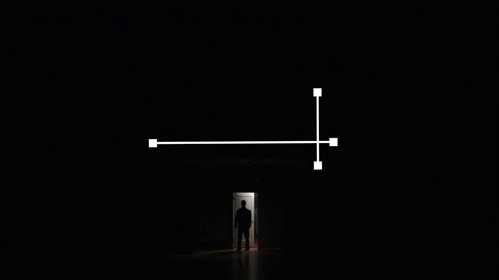
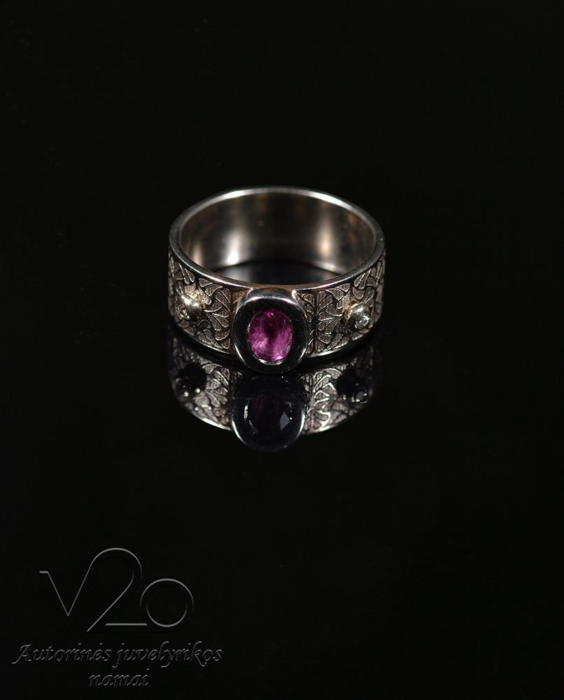

Pavasario žiedas

Pagrindinis Apie mus Asortimentas Tulpės Ankstyvos Vid. vėlyvumo Vėlyvos Botaninės rūšys Daugiažiedės tulpės MIX Narcizai Pilnaviduriai narcizai Didžiažiedžiai narcizai Vamzdeliniai narcizai Poetiniai narcizai Kitos gėlės Margutės Hiacintai Krokai Žydrės Irisai (svogūniniai) Dekor. česnakai Skintos gėlės/puokštės Pavasario gėlės Vasaros gėlės Rudens gėlės
Užsakymai nuo rugpjūčio mėn. Pristatymas nuo rugpjūčio vid.
Galerija Kontaktai Prisijungti Valiuta € EUR € - EUR Paskyra Paskyra Mano paskyra Įsiminti produktai Krepšelis Prisijungti Sukurti paskyrą Krepšelis 0 Tarpinė suma 0,00 EUR Pristatymas Nemokama Mokesčiai 0,00 EUR Viso 0,00 EUR Rodyti krepšelį Tęsti apsipirkimą Jūsų krepšelyje nėra prekių Užsakymai nuo rugpjūčio vid.
Užsakymai priimami nuo rugpjūčio 10d.
Užsakymai priimami nuo rugpjūčio 10d.
irisai, iris, vilkdalgis tinklinis
Užsakymai priimami nuo rugpjūčio 10d.
Sveiki atvykę į Pavasario žiedą
Po žiemos saulės išsiilgęs bunda pirmas pavasario žiedas . Ilgai lauktas ir išsiilgtas, spalvotas ir kvepiantis pavasario žiedas . Mūsų internetinėje parduotuvėje galite rasti ne tik išskirtinių tulpių, narcizų veislių, bet ir kitų svogūninių gėlių savo gėlynams.Tulpės
Pirkti dabar
Narcizai
Pirkti dabar
Kitos gėlės
Pirkti dabar
Skintos gėlės
Pirkti dabar
Mūsų produktai
Gėlės Jūsų gėlynams
Pagrindinis Tulpės Narcizai Kitos gėlės 2020 naujienos Nauja Įdėti į pageidavimų sąrašą Add to compare PagrindinisCopper Image (3 vnt)
0 Review / Palikti atsiliepimą 2,40 EURCopper Image (tulipa, tulip, tulpė). Vėlyva, pilnavidurė, kvepianti tulpė. Žydėjimo trukmė apie 14 dienų. Stiebas iki 30 cm. Tinka želdynams ir skynimui.
Nauja Nauja Įdėti į pageidavimų sąrašą Add to compare PagrindinisGlobo Rojo (4 vnt)
0 Review / Palikti atsiliepimą 2,00 EUR Nauja Nauja Įdėti į pageidavimų sąrašą Add to compare PagrindinisPurissima Blonde (3vnt)
0 Review / Palikti atsiliepimą 2,00 EUR Nauja Nauja Įdėti į pageidavimų sąrašą Add to compare PagrindinisPeptalk (3 vnt)
0 Review / Palikti atsiliepimą 2,00 EUR Nauja Nauja Įdėti į pageidavimų sąrašą Add to compare PagrindinisMarie Jo (4 vnt)
0 Review / Palikti atsiliepimą 2,00 EUR Nauja Įdėti į pageidavimų sąrašą Add to compare PagrindinisMIX Juodos akys (20 vnt)
0 Review / Palikti atsiliepimą 8,00 EURMIX "Juodos akys" (tulipa, tulip, tulpė). Vėlyvų, kontrastingų spalvų tulpių rinkinys. 10 vnt "Queen of Night" ir 10 vnt "Silver Cloud"
Įdėti į pageidavimų sąrašą Add to compare PagrindinisMIX Netikėtumas (20 vnt)
0 Review / Palikti atsiliepimą 12,00 EURMIX "Netiktumas" (tulipa, tulip, tulpė). Vėlyvų, kontrastingų spalvų tulpių rinkinys. 10 vnt "Barbados" ir 10 vnt "Paul Scheer"
Įdėti į pageidavimų sąrašą Add to compare Triumfo tulpėsSilver Cloud (4 vnt)
0 Review / Palikti atsiliepimą 2,00 EURSilver Cloud (tulipa, tulip, tulpė). Labai graži žiedo forma ir klasikinė spalva yra šios tulpės unikalumas. Ūgis 30-40 cm. Neskleidžia žiedo.
Nurodyta kaina: 4 vnt
Rodyti daugiau Rodyti daugiau Rodyti daugiau Rodyti daugiau Rodyti daugiauPopular Products Share your single post here. You can choose the latest posts or best articles to show on your homepage
Special New Arrivals FeaturedSpecial
View moreNew Arrivals
View moreFeatured
View moreMūsų parduotuvė
Mūsų parduotuvė iconTurite klausimų ? Susisiekite
8-626-21622
aurelija@pavasarioziedas.lt
Adresas
Beinoravos km., Radviliškio r.
Informacija
Informacija Mano profilis Užsakymų istorija Patikusios prekėsOur Policy
Our Policy Pirkimo sąlygos Apie mus Mus galite rastiJoin our newsletter
Facebook Copyright 2018 pavasarioziedas.lt - visos teisės saugomos
